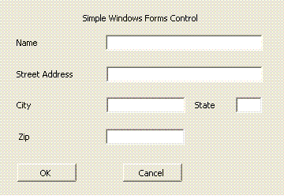
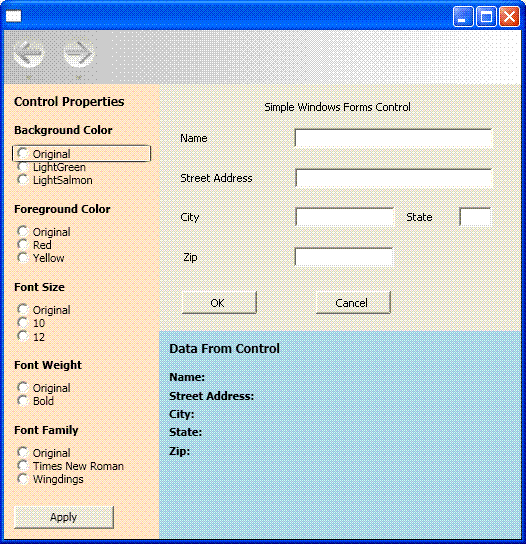

Пошаговое руководство. Размещение составного элемента управления Windows Forms в приложении WPF
Windows Presentation Foundation (WPF) предоставляет среду с широкими возможностями для создания приложений. Тем не менее, если имеются существенные преимущества в Windows Forms код, он может быть более эффективным для повторного использования по крайней мере часть этого кода в вашей WPF приложения, а не переписывание кода с нуля. Наиболее распространенный сценарий — при наличии существующих элементов управления Windows Forms. В некоторых случаях, возможно, у вас даже нет доступа к исходному коду для этих элементов управления. WPF предоставляет простую процедуру размещения таких элементов управления в WPF приложения. Например, можно использовать WPF для большей части операций программирования при размещении специализированных DataGridView элементов управления.
В этом пошаговом руководстве пошагово продемонстрирует приложения, на котором размещена составного элемента управления Windows Forms для поддержки ввода данных в WPF приложения. Составной элемент управления упакован в библиотеку DLL. Эта общая процедура может быть расширена для более сложных приложений и элементов управления. В этом пошаговом руководстве должна быть почти идентично повторяет свойства и функциональные возможности для Пошаговое руководство: Размещение составного элемента управления WPF в Windows Forms. Основным отличием является то, что сценарий размещения выполняется в обратном порядке.
Пошаговое руководство состоит из двух разделов. В первом разделе кратко описывается реализация составного элемента управления Windows Forms. Во втором разделе подробно рассматриваются размещение составного элемента управления в WPF приложения, получать события из элемента управления и доступ к некоторым свойствам элемента управления.
В данном пошаговом руководстве представлены следующие задачи.
Реализация составного элемента управления Windows Forms.
Реализация ведущего приложения WPF.
Полный пример кода для задач, приведенных в этом пошаговом руководстве, см. в разделе размещения Windows Forms составного элемента управления в WPF.
Предварительные требования
Для выполнения шагов, описанных в этом руководстве, вам понадобится Visual Studio.
Реализация составного элемента управления Windows Forms
В этом примере составного элемента управления Windows Forms — это форма простого ввода данных. Эта форма принимает имя и адрес пользователя и затем использует пользовательское событие для возвращения сведений в основное приложение. На приведенном ниже рисунке показан отображаемый элемент управления.
На следующем рисунке показана составного элемента управления Windows Forms:

Создание проекта
Для запуска проекта выполните указанные ниже действия.
Запустите Microsoft Visual Studioи откройте новый проект диалоговое окно.
В категории Windows выберите Библиотека элементов управления Windows Forms шаблона.
Присвойте проекту имя
MyControls.Для расположения укажите понятным именем папки верхнего уровня, такие как
WpfHostingWindowsFormsControl. Позже ведущее приложение будет помещено в эту папку.Нажмите кнопку ОК, чтобы создать проект. По умолчанию проект содержит один элемент управления с именем
UserControl1.В обозревателе решений Переименуйте
UserControl1дляMyControl1.
Проект должен иметь ссылки на перечисленные ниже системные библиотеки DLL. Если какие-либо из этих библиотек DLL не включены по умолчанию, добавьте их в проект.
Система
System.Data
System.Drawing;
System.Windows.Forms.
System.Xml
Добавление элементов управления на форму
Чтобы добавить элементы управления в форму, выполните следующие действия.
- Откройте
MyControl1в конструкторе.
Добавьте пять Label элементы управления и соответствующие им TextBox элементами управления, размером и положением, как на предыдущем рисунке, в форме. В примере TextBox именуются элементы управления:
txtNametxtAddresstxtCitytxtStatetxtZip
Добавьте два Button элементов управления с меткой ОК и отменить. В примере используются названия кнопок btnOK и btnCancel, соответственно.
Реализация соответствующего кода
Откройте форму в представлении кода. Элемент управления возвращает собранные данные на узел путем вызова пользовательского OnButtonClick событий. Данные содержатся в объекте аргумента события. В следующем коде показано объявление события и делегата.
Добавьте следующий код в класс MyControl1 .
public delegate void MyControlEventHandler(object sender, MyControlEventArgs args);
public event MyControlEventHandler OnButtonClick;
MyControlEventArgs Класс содержит информацию, возвращаемую к узлу.
Добавьте в форму следующий класс.
public class MyControlEventArgs : EventArgs
{
private string _Name;
private string _StreetAddress;
private string _City;
private string _State;
private string _Zip;
private bool _IsOK;
public MyControlEventArgs(bool result,
string name,
string address,
string city,
string state,
string zip)
{
_IsOK = result;
_Name = name;
_StreetAddress = address;
_City = city;
_State = state;
_Zip = zip;
}
public string MyName
{
get { return _Name; }
set { _Name = value; }
}
public string MyStreetAddress
{
get { return _StreetAddress; }
set { _StreetAddress = value; }
}
public string MyCity
{
get { return _City; }
set { _City = value; }
}
public string MyState
{
get { return _State; }
set { _State = value; }
}
public string MyZip
{
get { return _Zip; }
set { _Zip = value; }
}
public bool IsOK
{
get { return _IsOK; }
set { _IsOK = value; }
}
}
Когда пользователь щелкает ОК или отменить кнопки, Click создать обработчики событий MyControlEventArgs объект, содержащий данные и вызывает OnButtonClick событий. Аргумент события, — это единственное различие между двумя обработчиками IsOK свойство. Это свойство позволяет основному приложению определить, какая кнопка была нажата. Ему будет присвоено true для ОК кнопку, и false для отменить кнопки. В следующем примере кода показаны два обработчика кнопок.
Добавьте следующий код в класс MyControl1 .
private void btnOK_Click(object sender, System.EventArgs e)
{
MyControlEventArgs retvals = new MyControlEventArgs(true,
txtName.Text,
txtAddress.Text,
txtCity.Text,
txtState.Text,
txtZip.Text);
OnButtonClick(this, retvals);
}
private void btnCancel_Click(object sender, System.EventArgs e)
{
MyControlEventArgs retvals = new MyControlEventArgs(false,
txtName.Text,
txtAddress.Text,
txtCity.Text,
txtState.Text,
txtZip.Text);
OnButtonClick(this, retvals);
}
Присвоение сборке строгого имени и построение сборки
Для этой сборки, на которые ссылается WPF приложения, он должен иметь строгое имя. Для создания строгого имени, создать файл ключа с Sn.exe и добавьте его в проект.
Откройте командную строку Visual Studio. Чтобы сделать это, нажмите кнопку запустить меню, а затем выберите все программы/Microsoft Visual Studio 2010 Tools и Visual Studio Командная строка Visual Studio. Откроется окно консоли с настраиваемыми переменными среды.
В командной строке, используйте
cdкоманду, чтобы перейти в папку проекта.Создайте файл ключа с именем MyControls.snk, выполнив следующую команду.
Sn.exe -k MyControls.snkЧтобы включить файл ключа в проект, щелкните правой кнопкой мыши имя проекта в обозревателе решений и нажмите кнопку свойства. В конструкторе проектов щелкните подписывание выберите подписать сборку установите флажок, а затем перейдите к файлу ключа.
Постройте решение. Сборка создаст библиотеку DLL с именем MyControls.dll.
Реализация ведущего приложения WPF
WPF Разместить приложение использует WindowsFormsHost для размещения элемента управления MyControl1. Приложение обрабатывает OnButtonClick событий для получения данных из элемента управления. Он также имеет коллекцию переключателей, можно изменять некоторые свойства элемента управления из WPF приложения. Ниже показано готовое приложение.
На следующем рисунке показана полного приложения, включая элемент управления, внедренные в приложении WPF:

Создание проекта
Для запуска проекта выполните указанные ниже действия.
Откройте Visual Studioи выберите новый проект.
В категории Windows выберите приложение WPF шаблона.
Присвойте проекту имя
WpfHost.В качестве расположения укажите ту же папку верхнего уровня, в которой содержится проект MyControls.
Нажмите кнопку ОК, чтобы создать проект.
Необходимо также добавить ссылки на библиотеку DLL, содержащую MyControl1 и других сборок.
Щелкните правой кнопкой мыши имя проекта в обозревателе решений и выберите добавить ссылку.
Нажмите кнопку Обзор вкладку и перейдите к папке, которая содержит файл MyControls.dll. В данном пошаговом руководстве это папка MyControls\bin\Debug.
Выберите файл MyControls.dll и нажмите кнопку ОК.
Добавьте ссылку на сборку WindowsFormsIntegration с именем WindowsFormsIntegration.dll.
Реализация базового макета
пользовательский интерфейс Узла приложение реализовано в файле MainWindow.xaml. Этот файл содержит XAML разметку, которая определяет макет и размещает элемент управления Windows Forms. Приложение состоит из трех областей:
Свойства элемента управления панель, которая содержит коллекцию переключателей, можно использовать для изменения различных свойств размещаемого элемента управления.
Данные из элемента управления панель, которая содержит несколько TextBlock элементы, которые отображают данные, возвращенные из размещенного элемента управления.
Размещенный элемент.
Базовый макет показан в следующем XAML-коде. Разметка, необходимая для размещения MyControl1 пропущена в этом примере, но будет рассказано ниже.
Замените XAML-код в файле MainWindow.xaml следующим. Если вы используете Visual Basic, измените класс на x:Class="MainWindow".
<Window xmlns="http://schemas.microsoft.com/winfx/2006/xaml/presentation"
xmlns:x="http://schemas.microsoft.com/winfx/2006/xaml"
x:Class="WpfHost.MainWindow"
xmlns:mcl="clr-namespace:MyControls;assembly=MyControls"
Loaded="Init">
<DockPanel>
<DockPanel.Resources>
<Style x:Key="inlineText" TargetType="{x:Type Inline}">
<Setter Property="FontWeight" Value="Normal"/>
</Style>
<Style x:Key="titleText" TargetType="{x:Type TextBlock}">
<Setter Property="DockPanel.Dock" Value="Top"/>
<Setter Property="FontWeight" Value="Bold"/>
<Setter Property="Margin" Value="10,5,10,0"/>
</Style>
</DockPanel.Resources>
<StackPanel Orientation="Vertical"
DockPanel.Dock="Left"
Background="Bisque"
Width="250">
<TextBlock Margin="10,10,10,10"
FontWeight="Bold"
FontSize="12">Control Properties</TextBlock>
<TextBlock Style="{StaticResource titleText}">Background Color</TextBlock>
<StackPanel Margin="10,10,10,10">
<RadioButton Name="rdbtnOriginalBackColor"
IsChecked="True"
Click="BackColorChanged">Original</RadioButton>
<RadioButton Name="rdbtnBackGreen"
Click="BackColorChanged">LightGreen</RadioButton>
<RadioButton Name="rdbtnBackSalmon"
Click="BackColorChanged">LightSalmon</RadioButton>
</StackPanel>
<TextBlock Style="{StaticResource titleText}">Foreground Color</TextBlock>
<StackPanel Margin="10,10,10,10">
<RadioButton Name="rdbtnOriginalForeColor"
IsChecked="True"
Click="ForeColorChanged">Original</RadioButton>
<RadioButton Name="rdbtnForeRed"
Click="ForeColorChanged">Red</RadioButton>
<RadioButton Name="rdbtnForeYellow"
Click="ForeColorChanged">Yellow</RadioButton>
</StackPanel>
<TextBlock Style="{StaticResource titleText}">Font Family</TextBlock>
<StackPanel Margin="10,10,10,10">
<RadioButton Name="rdbtnOriginalFamily"
IsChecked="True"
Click="FontChanged">Original</RadioButton>
<RadioButton Name="rdbtnTimes"
Click="FontChanged">Times New Roman</RadioButton>
<RadioButton Name="rdbtnWingdings"
Click="FontChanged">Wingdings</RadioButton>
</StackPanel>
<TextBlock Style="{StaticResource titleText}">Font Size</TextBlock>
<StackPanel Margin="10,10,10,10">
<RadioButton Name="rdbtnOriginalSize"
IsChecked="True"
Click="FontSizeChanged">Original</RadioButton>
<RadioButton Name="rdbtnTen"
Click="FontSizeChanged">10</RadioButton>
<RadioButton Name="rdbtnTwelve"
Click="FontSizeChanged">12</RadioButton>
</StackPanel>
<TextBlock Style="{StaticResource titleText}">Font Style</TextBlock>
<StackPanel Margin="10,10,10,10">
<RadioButton Name="rdbtnNormalStyle"
IsChecked="True"
Click="StyleChanged">Original</RadioButton>
<RadioButton Name="rdbtnItalic"
Click="StyleChanged">Italic</RadioButton>
</StackPanel>
<TextBlock Style="{StaticResource titleText}">Font Weight</TextBlock>
<StackPanel Margin="10,10,10,10">
<RadioButton Name="rdbtnOriginalWeight"
IsChecked="True"
Click="WeightChanged">
Original
</RadioButton>
<RadioButton Name="rdbtnBold"
Click="WeightChanged">Bold</RadioButton>
</StackPanel>
</StackPanel>
<WindowsFormsHost Name="wfh"
DockPanel.Dock="Top"
Height="300">
<mcl:MyControl1 Name="mc"/>
</WindowsFormsHost>
<StackPanel Orientation="Vertical"
Height="Auto"
Background="LightBlue">
<TextBlock Margin="10,10,10,10"
FontWeight="Bold"
FontSize="12">Data From Control</TextBlock>
<TextBlock Style="{StaticResource titleText}">
Name: <Span Name="txtName" Style="{StaticResource inlineText}"/>
</TextBlock>
<TextBlock Style="{StaticResource titleText}">
Street Address: <Span Name="txtAddress" Style="{StaticResource inlineText}"/>
</TextBlock>
<TextBlock Style="{StaticResource titleText}">
City: <Span Name="txtCity" Style="{StaticResource inlineText}"/>
</TextBlock>
<TextBlock Style="{StaticResource titleText}">
State: <Span Name="txtState" Style="{StaticResource inlineText}"/>
</TextBlock>
<TextBlock Style="{StaticResource titleText}">
Zip: <Span Name="txtZip" Style="{StaticResource inlineText}"/>
</TextBlock>
</StackPanel>
</DockPanel>
</Window>
Первый StackPanel элемент содержит несколько наборов RadioButton элементы управления, необходимые для изменения различных свойств размещаемого элемента управления по умолчанию. За которым следует WindowsFormsHost элемент, какие узлы MyControl1. Конечный StackPanel элемент содержит несколько TextBlock элементы, отображающие данных, которые возвращаются размещенным элементом управления. Упорядочение элементов и Dock и Height параметров атрибутов внедрить размещаемого элемента управления в окно без пропусков и искажений.
Размещение элемента управления
Следующей отредактированной версии предыдущего XAML внимание уделяется элементам, которые необходимы для размещения MyControl1.
<Window xmlns="http://schemas.microsoft.com/winfx/2006/xaml/presentation"
xmlns:x="http://schemas.microsoft.com/winfx/2006/xaml"
x:Class="WpfHost.MainWindow"
xmlns:mcl="clr-namespace:MyControls;assembly=MyControls"
Loaded="Init">
<WindowsFormsHost Name="wfh"
DockPanel.Dock="Top"
Height="300">
<mcl:MyControl1 Name="mc"/>
</WindowsFormsHost>
xmlns Атрибут сопоставления пространства имен создает ссылку на MyControls пространство имен, содержащее размещенного элемента управления. Это сопоставление позволяет представить MyControl1 в XAML как <mcl:MyControl1>.
Два элемента в коде XAML обрабатывают размещение:
WindowsFormsHostПредставляет WindowsFormsHost элемент, который позволяет размещать элемент управления Windows Forms в WPF приложения.mcl:MyControl1, которое представляетMyControl1, добавляется WindowsFormsHost дочернюю коллекцию элемента. Таким образом, этот элемент управления Windows Forms отображается как часть WPF , а также могут взаимодействовать с элементом управления из приложения.
Реализация файла кода программной части
Файл кода, MainWindow.xaml.vb или MainWindow.xaml.cs содержит процедурный код, который реализует функциональность UI описано в предыдущем разделе. Основные задачи
Присоединение обработчика событий к
MyControl1вOnButtonClickсобытий.Изменение различных свойств
MyControl1в зависимости от способа настройки коллекции переключателей.Отображение данных, собранных с помощью элемента управления.
Инициализация приложения
Код инициализации содержится в обработчике событий для окна Loaded событий и присоединяет обработчик событий к элементу управления OnButtonClick событий.
В файле MainWindow.xaml.vb или MainWindow.xaml.cs, добавьте следующий код, чтобы MainWindow класса.
private Application app;
private Window myWindow;
FontWeight initFontWeight;
Double initFontSize;
FontStyle initFontStyle;
SolidColorBrush initBackBrush;
SolidColorBrush initForeBrush;
FontFamily initFontFamily;
bool UIIsReady = false;
private void Init(object sender, EventArgs e)
{
app = System.Windows.Application.Current;
myWindow = (Window)app.MainWindow;
myWindow.SizeToContent = SizeToContent.WidthAndHeight;
wfh.TabIndex = 10;
initFontSize = wfh.FontSize;
initFontWeight = wfh.FontWeight;
initFontFamily = wfh.FontFamily;
initFontStyle = wfh.FontStyle;
initBackBrush = (SolidColorBrush)wfh.Background;
initForeBrush = (SolidColorBrush)wfh.Foreground;
(wfh.Child as MyControl1).OnButtonClick += new MyControl1.MyControlEventHandler(Pane1_OnButtonClick);
UIIsReady = true;
}
Так как XAML описанные ранее добавленный MyControl1 для WindowsFormsHost коллекцию дочерних элементов элемента, можно привести WindowsFormsHost элемента Child для получения ссылки на MyControl1. Затем можно использовать эту ссылку для присоединения обработчика событий к OnButtonClick.
Помимо предоставления ссылки на элемент управления, WindowsFormsHost предоставляет ряд свойств элемента управления, которыми можно управлять из приложения. Код инициализации назначает эти значения закрытым глобальным переменным для последующего использования в приложении.
Таким образом, можно легко получить типы в MyControls библиотеки DLL, добавьте следующий Imports или using в начало файла.
Imports MyControls
using MyControls;
Обработка события OnButtonClick
MyControl1 вызывает OnButtonClick событие, когда пользователь нажимает какую-либо из кнопок элемента управления.
Добавьте следующий код в класс MainWindow .
//Handle button clicks on the Windows Form control
private void Pane1_OnButtonClick(object sender, MyControlEventArgs args)
{
txtName.Inlines.Clear();
txtAddress.Inlines.Clear();
txtCity.Inlines.Clear();
txtState.Inlines.Clear();
txtZip.Inlines.Clear();
if (args.IsOK)
{
txtName.Inlines.Add( " " + args.MyName );
txtAddress.Inlines.Add( " " + args.MyStreetAddress );
txtCity.Inlines.Add( " " + args.MyCity );
txtState.Inlines.Add( " " + args.MyState );
txtZip.Inlines.Add( " " + args.MyZip );
}
}
Данные в текстовых полях упакованы в MyControlEventArgs объекта. Если пользователь нажимает кнопку ОК кнопку, обработчик событий извлекает данные и отображает его на панели ниже MyControl1.
Изменение свойств элемента управления
WindowsFormsHost Элемент предоставляет несколько свойств размещаемого элемента управления по умолчанию. В результате можно изменить внешний вид элемента управления, чтобы он более полно соответствовал стилю приложения. Наборы переключателей на левой панели позволяют пользователю изменять некоторые свойства цвета и шрифта. Каждый набор кнопок имеет обработчик для Click событие, которое определяет пользователя переключателей и меняет соответствующее свойство элемента управления.
Добавьте следующий код в класс MainWindow .
private void BackColorChanged(object sender, RoutedEventArgs e)
{
if (sender == rdbtnBackGreen)
wfh.Background = new SolidColorBrush(Colors.LightGreen);
else if (sender == rdbtnBackSalmon)
wfh.Background = new SolidColorBrush(Colors.LightSalmon);
else if (UIIsReady == true)
wfh.Background = initBackBrush;
}
private void ForeColorChanged(object sender, RoutedEventArgs e)
{
if (sender == rdbtnForeRed)
wfh.Foreground = new SolidColorBrush(Colors.Red);
else if (sender == rdbtnForeYellow)
wfh.Foreground = new SolidColorBrush(Colors.Yellow);
else if (UIIsReady == true)
wfh.Foreground = initForeBrush;
}
private void FontChanged(object sender, RoutedEventArgs e)
{
if (sender == rdbtnTimes)
wfh.FontFamily = new FontFamily("Times New Roman");
else if (sender == rdbtnWingdings)
wfh.FontFamily = new FontFamily("Wingdings");
else if (UIIsReady == true)
wfh.FontFamily = initFontFamily;
}
private void FontSizeChanged(object sender, RoutedEventArgs e)
{
if (sender == rdbtnTen)
wfh.FontSize = 10;
else if (sender == rdbtnTwelve)
wfh.FontSize = 12;
else if (UIIsReady == true)
wfh.FontSize = initFontSize;
}
private void StyleChanged(object sender, RoutedEventArgs e)
{
if (sender == rdbtnItalic)
wfh.FontStyle = FontStyles.Italic;
else if (UIIsReady == true)
wfh.FontStyle = initFontStyle;
}
private void WeightChanged(object sender, RoutedEventArgs e)
{
if (sender == rdbtnBold)
wfh.FontWeight = FontWeights.Bold;
else if (UIIsReady == true)
wfh.FontWeight = initFontWeight;
}
Выполните сборку и запуск приложения. Добавьте какой-нибудь текст в составной элемент управления Windows Forms и нажмите кнопку ОК. Текст отображается в метках. Щелкайте различные переключатели, чтобы увидеть соответствующий эффект в элементе управления.